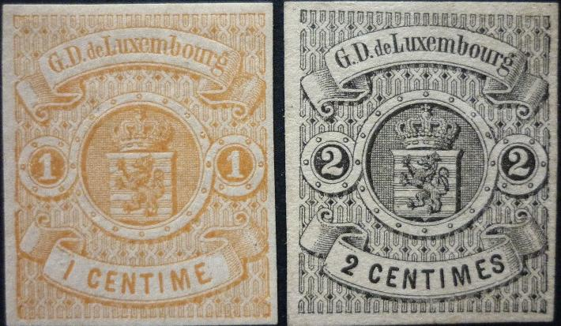
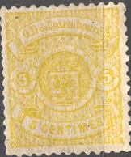
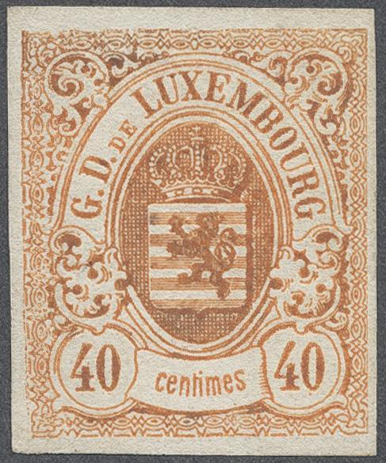
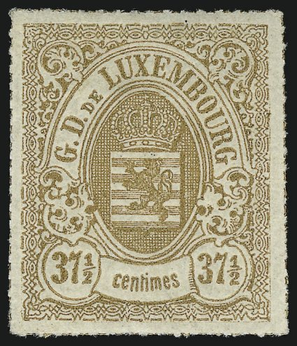
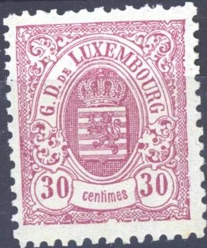
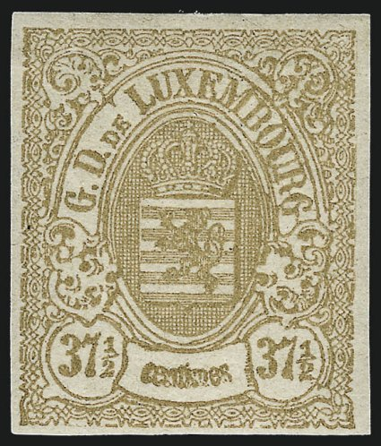
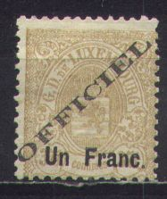
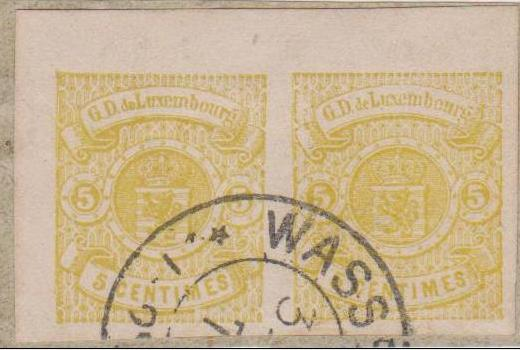

Imperforate stamps
Return To Catalogue - - Luxembourg 1852 issue - Luxembourg 1859-1881, forgeries, part 1 - 1859-1881, forgeries, part 2 - 1859-1881, forgeries; Fournier and Sperati - Cancels on the first issues - Luxembourg 1882-1913 - Luxembourg 1914-1920 and miscellaneous
Note: on my website many of the
pictures can not be seen! They are of course present in the
catalogue;
contact me if you want to purchase it.

Imperforate stamps


Rouletted with white separation lines


Rouletted with colored separation lines




Perforated stamps; Haarlem print (1880 wide perforation, sharper
print)
1 c brown 1 c orange 2 c black 4 c yellow 4 c green 5 c yellow Different design:



Imperforate stamps



Rouletted with colored separation line


Local Luxemburg print, perforation with narrow margins. Also the
design is slightly blur.



Haarlem print (1880), perforation with large margins
10 c blue 10 c violet (or grey or lilac) 12 1/2 c red 20 c brown 25 c brown 25 c blue 30 c lilac 30 c red 37 1/2 c green 37 1/2 c brown 40 c orange
Specialists distinguish between Frankfurt printing (1 October 1859), local Luxemburg printing (1874 onwards) and Haarlem printing (1880, the Netherlands, stamps with larger margins). The Frankfurt printing follows the types of the stamps of Thurn and Taxis (i.e. imperforate first, then colorless line rouletted and finally rouletted with colored lines).
Value of the stamps |
|||
vc = very common c = common * = not so common ** = uncommon |
*** = very uncommon R = rare RR = very rare RRR = extremely rare |
||
| Value | Unused | Used | Remarks |
Imperforate
(1859) |
|||
| 1 c brown | RR | RR | |
| 2 c | RR | RR | |
| 4 c yellow | RR | RR | Light yellow (1860) or yellow-ochre (1864) |
| 4 c green | R | R | 1874 (local Luxemburg print) |
| 5 c | RR | - | Actually a proof from the 1875 issue |
| 10 c blue | RR | R | |
| 10 c violet | RRR | RR | Actually an imperforate Luxembourg print... 10 c yellow is a cut from an envelope |
| 12 1/2 c | RR | RR | |
| 25 c brown | RRR | RRR | |
| 30 c lilac | RRR | RR | A 30 c red with very large margins is a cut from postal stationary. |
| 37 1/2 c green | RR | RR | |
| 40 c | RRR | RR | |
| Rouletted with white separation lines (1865) | |||
| 1 c brown | RR | RR | |
| 2 c | R | *** | |
| 4 c yellow | RR | RR | |
| 4 c green | R | R | 1871 |
| Rouletted with coloured separation lines (1865) | |||
| 1 c brown | *** | *** | |
| 1 c orange | R | *** | |
| 10 c violet | R | ** | |
| 12 1/2 c | R | *** | |
| 20 c | R | *** | |
| 25 c blue | RR | *** | |
| 30 c lilac | RR | RR | |
| 37 1/2 c brown | RRR | RRR | This stamp was withdrawn in October 1872; the
remaining stock (75,000 out of 100,000 stamps printed) was overprinted 'UN FRANC'. Dangerous forgeries exist, by removing the 'UN FRANC' overprint of that issue. With error 'centines': RRR |
| 40 c | RRR | R | |
| Perforated 1875: perforation 13 or 1880 (local Luxembourg print): 13 1/2, 12 1/2 or 12 1/2 x 12 (Haarlem print) |
|||
| 1 c brown | *** | *** | |
| 2 c | *** | *** | |
| 4 c green | ** | ** | |
| 5 c | R | *** | |
| 10 c violet | *** | * | |
| 12 1/2 c | R | R | |
| 20 c | RR | R | |
| 25 c blue | *** | *** | |
| 30 c red | *** | *** | Also redbrown: RR |
| 37 1/2 c brown | *** | - | Prepared, but not issued. Also exists imperforate. |
| 40 c | ** | *** | |
Surcharged



37 1/2 c Luxemburg local print without overprint, prepared, but
not issued (left perforated and right imperforate).
'UN FRANC' on 37 1/2 c brown (1874) 'Un Franc' on 37 1/2 c brown (1879)
Value of the stamps |
|||
vc = very common c = common * = not so common ** = uncommon |
*** = very uncommon R = rare RR = very rare RRR = extremely rare |
||
| Value | Unused | Used | Remarks |
| 'UN FRANC' on 37 1/2 c | RR | RR | Rouletted with coloured perforation lines |
| 'Un Franc' on 37 1/2 c | *** | *** | Perforated; Error: 'Un Pranc': RRR (apppeared twice in a sheet) |
Overprinted 'OFFICIEL' (Official stamps of 1875, 2 types of overprint exist)



1 c brown 2 c black 4 c green 5 c yellow 10 c violet 12 1/2 c red 20 c brown 25 c blue 30 c red 40 c orange 'UN FRANC' on 37 1/2 c brown 'Un Franc' on 37 1/2 c brown
Value of the stamps |
|||
vc = very common c = common * = not so common ** = uncommon |
*** = very uncommon R = rare RR = very rare RRR = extremely rare |
||
| Value | Unused | Used | Remarks |
Type 1: 'OFFICIEL' fat letters 25 mm |
|||
| 1 c brown | *** | *** | Rouletted with coloured perforation lines |
| 1 c brown | ** | ** | Perforated |
| 1 c orange | *** | - | Prepared, but not issued |
| 2 c | *** | *** | Rouletted with white separation lines |
| 2 c | *** | *** | Perforated |
| 4 c green | * | ** | Perforated |
| 5 c yellow | R | R | Perforated |
| 10 c violet | R | R | Rouletted with coloured perforation lines |
| 10 c violet | *** | *** | Perforated (on Haarlem issue: RRR?) |
| 12 1/2 c | R | R | Rouletted with coloured perforation lines |
| 12 1/2 c | *** | R | Perforated |
| 20 c | *** | *** | Rouletted with coloured perforation lines |
| 25 c blue | RR | RR | Rouletted with coloured perforation lines |
| 25 c blue | R | R | Imperforate |
| 25 c blue | *** | *** | Perforated (on Haarlem issue: **) |
| 30 c lilac | *** | R | Rouletted with coloured perforation lines |
| 40 c | *** | *** | Rouletted with coloured perforation lines |
| 'UN FRANC' on 37 1/2 c brown | RR | RR | Rouletted with coloured perforation lines |
| 'Un Franc' on 37 1/2 c brown | *** | *** | Perforated |
Type 2: 'OFFICIEL' thin letters 24 mm |
|||
| 1 c brown | *** | *** | Rouletted with coloured perforation lines |
| 1 c brown | *** | *** | Perforated |
| 2 c | *** | *** | Perforated |
| 4 c green | ** | *** | Perforated |
| 5 c yellow | RR | RR | Perforated (on Haarlem issue:RRR?) |
| 10 c violet | *** | *** | Perforated (on Haarlem issue: RRR?) |
| 12 1/2 c | *** | *** | Perforated |
| 20 c | *** | *** | Rouletted with coloured perforation lines |
| 25 c blue | R | R | Perforated (on Haarlem issue: RRR?) |
| 30 c lilac | RR | RR | Rouletted with coloured perforation lines |
| 40 c | *** | *** | Rouletted with coloured perforation lines |
| 'UN FRANC' on 37 1/2 c brown | RR | RR | Rouletted with coloured perforation lines |
Overpinted 'S.P.' ('Service Public', official stamps of 1882; two types of overprint

Type 1 of the 'S.P.' overprint


Type 2 of the 'S.P.' overprint (fatter)
1 c brown 2 c black 4 c green 5 c yellow 10 c grey 12 1/2 c red 20 c brown 25 c blue 30 c red 40 c orange 'Un Franc' on 37 1/2 c brown
Value of the stamps |
|||
vc = very common c = common * = not so common ** = uncommon |
*** = very uncommon R = rare RR = very rare RRR = extremely rare |
||
| Value | Unused | Used | Remarks |
Type 1: 'S.P.' skinny |
|||
| 1 c brown | ** | ** | On local print or Haarlem print Haarlem print exists in pairs with one unsurcharged stamp. |
| 2 c | ** | *** | On Haarlem print only |
| 4 c green | *** | *** | On local print only |
| 5 c yellow | RR | RR | Local print |
| 5 c yellow | *** | *** | Haarlem print |
| 10 c violet | *** | *** | Haarlem print |
| 12 1/2 c | R | R | Haarlem print |
| 20 c | *** | *** | Haarlem print |
| 25 c blue | *** | *** | Haarlem print |
| 30 c | *** | *** | Haarlem print |
| 40 c | *** | *** | Rouletted with coloured perforation lines |
| 'Un Franc' on 37 1/2 c | *** | *** | Local print |
Type 2: 'S.P.' fat; prepared but not issued(?) |
|||
| 1 c brown | *** | ? | On Haarlem print only |
| 2 c | *** | ? | On Haarlem print only |
| 4 c green | *** | ? | On local print only |
| 5 c yellow | *** | ? | Haarlem print |
| 10 c violet | *** | ? | Haarlem print |
| 12 1/2 c | R | ? | Local and Haarlem print |
| 20 c | *** | ? | Haarlem print |
| 30 c | *** | ? | Haarlem print |
| 40 c | R | ? | Rouletted with coloured perforation lines |
| 'Un Franc' on 37 1/2 c | R | ? | Local print |
Postal stationary
6 c violet cut from a postcard (reduced size).
Postal stationary in this design exists in the values: 5 c violet, 5 c red, 6 c violet, 6 c red, 10 c yellow, 12 1/2 c blue, 12 1/2 c red and 30 c red. The 6 c values exists overprinted with the text 'DEBITE A 5 CENTIMES pour le service interieur.':



Imperforate proof of the 5 c yellow stamp on thick paper. Next to
it, two of such proofs with a forged cancel.


A proof of the 30 c value? With watermark "W"!
For Luxembourg 1859-1881, forgeries, click here for part 1, here for part 2 or here for Luxembourg 1859-1881, forgeries made by Fournier and Sperati.
Luxembourg 1882-1920 and miscellaneous
Stamps - Timbres-Poste - Briefmarken

{kind=link}
{kind=link}
{kind=link}
{kind=link}
{kind=link}
{kind=link}
{kind=link}